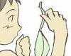
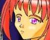

| ART | CREATOR | THUMBNAIL | RECOMMEND | TEXTS BY | |
| #61 | なりかけっ！ 魔法少女
■ FEEDBACK |
みるく聖姫 さん (Homepage) |
ぬぬう、この男子制服がぴちぴち魔法少女コスチュームになりかけてるあたり、なりかけ物の真骨頂ではないですか。魔法少女に変わってしまう五秒前(MK5)です。 | ※現在、ストーリー募集中 (00/10/31) | |
| #60 | なりかけっ！ バニーちゃん
■ FEEDBACK |
みるく聖姫 さん (Homepage) |
タイトル通り「なりかけっ」な感じがすんばらしいです。上半身のＴシャツっぽい感じがなんだかすごく官能的で。みるく聖姫さん提唱の新ジャンル「なりかけっ娘」の世界を堪能してください。 | 八重洲二世 (00/10/1) | |
| #59 | 見るな !!
■ FEEDBACK |
F.Z さん (Homepage) |
ミニなスカートが恥ずかしくてたまらないといった風情の少女が一人。可愛らしい仕草と表情です。 | ※現在、ストーリー募集中 (00/07/017) | |
| #58 | 咲弥君の憂鬱
■ FEEDBACK |
みかん飴 さん (Homepage) |
 |
みかん飴さんですー!! コミックス『咲弥君の憂鬱』読みたいですねー!! サクヤ君があの格好でやーらしく見えないのは元・男の子の特権でしょうか。本人それどこじゃないだろし。 | ※現在、ストーリー募集中 (00/07/02) |
| #57 | アンティーク・ドール
■ FEEDBACK |
ことぶきひかる さん (Homepage) |
深紅のロマンホラーというキャッチがパッと浮かびました。深紅じゃなくてラベンダー色なんですけど。お人形さんな無表情の内面でどんな葛藤があるのか想像せずにはいられません。 | ※現在、ストーリー募集中 (00/06/18) | |
| #56 | 兎娘（うさむすめ）・変幻っ
■ FEEDBACK |
MONDO さん |
最近、各所でブレイク中の兎娘さんたち。MONDOさんが、これまた手の込んだ変幻兎娘（息子）さんを描いてくれました！ ワンクリックするたびに変幻していきます。ぜひ試してみて下さい。 | ※現在、ストーリー募集中 (00/06/15) | |
| #55 | ま、まんざらでもないなあ…
■ FEEDBACK |
門部 章 さん |
「鏡で確認」はこのジャンルの外せない定番です。しかし、この子、妙に制服がだぶだぶですが、どうしたんでしょう。これは「だぶだぶ」マニアさんも必見です。 | ※現在、ストーリー募集中 (00/06/04) | |
| #54 | 明日のために、その一
■ FEEDBACK |
F.Z さん |
スカート穿こうか止めようか考え中♪なオンナノコ。しかし、端から見るとブラウスだけでも充分女の子っぽいんで「今さら何を迷ってるの？」状態です。 | ※現在、ストーリー募集中 (00/06/04) | |
| #53 | スカートが!!
■ FEEDBACK |
F.Z さん |
困惑しつつ乙女の恥じらいに顔を赤らめるの図。入れ替わり系、変身系、どちらでもお話が作れそうなイラストです。 | ※現在、ストーリー募集中 (00/05/24) | |
| #52 | どーしてお前は!?
■ FEEDBACK |
A9A さん (Homepage) |
 |
二人の男子生徒がそろって、女の子になってしまった模様。それなのに、後ろのほうの子は、妙に平然としてるのがポイント。はい、それじゃ各自想像萌え開始！ | ※現在、ストーリー募集中 (00/05/24) |
| #51 | RBTS
■ FEEDBACK |
みっしんぐ さん (Homepage) |
これは秀逸。「レンタルボディ」の世界ならではでのトラベルプラン。このサービスを利用した旅人が異国の地で異性の体で目覚めて…くすぐるシチュエイションです！ | ※現在、ストーリー募集中 (00//) | |
| #50 | 月下転生Ｒ
■ FEEDBACK |
角さん |
 |
こ、コワ〜〜!! 思いっきりホラー方面へ突っ走った、迫力のイラストです。ハッ、このシチュエーション…ヤドリバチに似てるぅ!! | 猫野丸太丸さん (00/07/02) |
| #49 | A PLASTIC MAIDEN 〜 可変少女 〜
■ FEEDBACK |
いしがき哲 さん |
 |
インパクトのある変身画像。セーラー服の袖に通された手がガクランの裾を押さえて、ガクランの腕がセーラーの襟をまさぐるという図式が効果的ですね。 | 八重洲二世, 風祭玲さん (00/05/08) |
| #48 | 俺の身体っ、返せっ！ 〜ただいま変換中 ２〜 ■ FEEDBACK |
MONDO さん |
 |
「こらっ、いいかげん元に戻せっ」「いいじゃん。もうちょっと貸しといてよこの身体っ」…なんという美しい会話でしょう。入れ替わり物の醍醐味満喫です！ | ※現在、ストーリー募集中 (00/04/10) |
| #47 | えっ！ マジですか！
■ FEEDBACK |
角さん |  |
神社の階段を男女が転がり落ちると互いの人格が入れ替わってしまうという日本固有の「階段落ち信仰」をイラストにしたものですね。あれって、本当だったんです!! | ※現在、ストーリー募集中 (00/04/08) |
| #46 | シリーズ椅子その５
■ FEEDBACK |
ことぶきひかる さん (Homepage) |
 |
常に新しい方向性を模索しつづけている（と思われる）ことぶき師匠の新たな題材は何と「椅子」でした。椅子に腰掛ける姿勢にはたしかにジェンダーがくっきりと表れるものです。 | ※現在、ストーリー募集中 (00/04/08) |
| #45 | 旅２
■ FEEDBACK |
原田聖也 さん (Homepage) |
 |
ツリ目少女はもう、それだけでなんとはなしに「萌え」ですね！ 彼女の旅はどんなものなのでしょう。…想像力を刺激されます。 | ※現在、ストーリー募集中 (99/4/1) |
| #44 | Clone Brother
■ FEEDBACK |
藤崎将軍 さん |
 |
もともと女の子だった妹よりも、事故で女の子になっちゃったおにーさんのほうがギャルっぽいです。兄妹でもあり双子の姉妹でもあるという二人です。 | ※現在、ストーリー募集中 (99/03/23) |
| #43 | 呪いの生き人形(笑)
■ FEEDBACK |
Cindy さん |
 |
人形少女化という機軸がいいですね。少年ジャンプの「アウターゾーン」刑事と人形少女編が好きだった人にもオススメでしょう。 | MONDOさん (00/4/3) |
| #42 | ＭＡＧＩＣ ＢＯＸ ＥＸ
■ FEEDBACK |
ことぶきひかる さん (Homepage) |
 |
ギャラリー史上初の、KISSプログラムを利用した作品です。MAGIC BOX の世界を疑似体験することができます。 | ※現在、ストーリー募集中 (99/03/02) |
| ART | CREATOR | THUMBNAIL | RECOMMEND | TEXTS BY | |